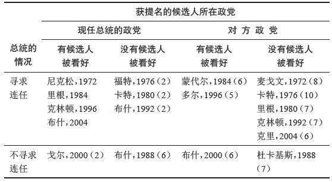
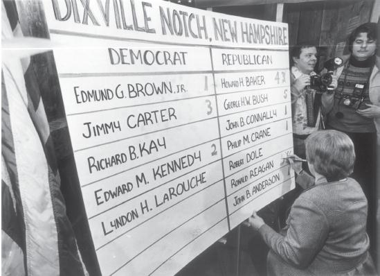
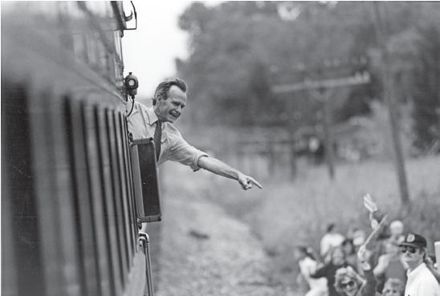
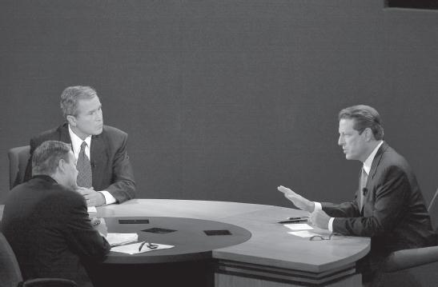

2000年11月和12月，世界各地的民众等了几个星期才知道究竟是乔治·W.布什还是阿尔·戈尔赢得了美国总统选举。分析家和民众就两点达成一致。首先，美国的选举体系存在严重缺陷。选举结果等了几个星期才最终确定，而且清楚表明获胜者要靠司法机构对于问题选票的裁决才击败对手，这样的选举体系对一个以民主灯塔自居、被其他民主国家视为典范的国度来说，堪称羞耻。
其次，很少有人真正明白美国的选举体系。乔治·W.布什在得票数不如阿尔·戈尔的情况下，最终赢得选举，对此不仅美国人感到吃惊，世界其他地区把美国式民主视为典范的民众也深表意外。在美国各地，公民课的教师向学生解释何为选举人团，那些学生回家后又把这些知识告诉父母。试图向观众解释这一制度时，那些明白该选举体系的电视记者常常不知道从何说起。
如果说美国民众选举总统的方式十分复杂，存在漏洞，并且很多人对此理解有误，那么两个主要政党遴选候选人的方式更是如此。民众知道获得提名的候选人在政党大会上产生，还知道早在这些会议召开之前，获得提名的人选就已经揭晓。那么人选究竟如何确定？哪些州举行初选，哪些州召开推举会议？两者有何区别？具体如何操作？参加大会的代表是哪些人？他们如何选出？他们又做些什么？
提名流程并不只是抽象的步骤，不只是痴迷政治的人才对此感兴趣。提名流程的具体安排决定了哪些候选人有机会获胜，哪些人毫无机会。该流程从一大批潜在的总统候选人当中筛选出两个人——两个主要政党的提名候选人。不了解候选人如何选出，就不可能理解美国选举的最终结果。
同样，总统大选的规则也并非中立。选举人团体系对某些候选人有利，对另一些候选人不利。正因为这一体系如此运行，乔治·布什才能当选。如果换一种选举体系，或许他就会失利。规则不同，候选人的竞选策略就会发生变化。资金支持在总统提名和选举流程中有着巨大的作用。竞选活动的资金捐助有具体规定——这些规定的力度强弱同样影响到选举的最终结果。只有明白了美国选举体系的运作方式以及其他方式可能产生的结果，才可以根据民主价值对这一体系提出批评。
乔治·W.布什两次获得共和党提名，成为总统候选人。第一次在2000年，时任总统比尔·克林顿即将离开白宫；第二次在2004年，布什寻求连任。这两次提名代表着政党提名总统候选人的两种不同方式。2004年，民主党提名约翰·克里成为总统候选人，挑战在任的共和党总统，这是第三种提名方式。
表5.1列出了分析总统候选人提名时需要考虑的若干因素。 [27] 关键因素是现任总统是否寻求连任。与之相关的是第二个因素，即提名究竟出自现任总统所在的政党，还是出自“在野”党。 [28] 如果在提名流程中某个候选人早早被看好，这样的流程就和那些没有热门候选人的例子有所不同。
从表5.1可以得出关于党内竞争的几点结论。首先，除了寻求连任的总统之外，那些在提名流程中早早被看好的候选人很少能最终获得提名。有四个人是例外，很让人感兴趣。其中两个人获得提名后要挑战现任总统，后者被认为难以战胜，因此这样的提名实际上意义不大。1984年的沃尔特·蒙代尔和1996年的鲍伯·多尔都是受人尊敬的政党领袖，他们配得上提名资格。但是，如果其他潜在的候选人认为对手（即现任总统）可能输掉，或许他们在本党内部就会遭遇更为强劲的挑战。2000年，阿尔·戈尔是现任副总统，同时也是党内确定的继任者；他有责任延续克林顿–戈尔团队的政策。
但是，2000年乔治·W.布什的提名完全不同。布什几乎是政党领袖指定的对象——不是形式上的政党组织领袖，而是本党在政府内部任职的重要人物（包括共和党州长）和本党的主要资助者（包括许多来自他的家乡得克萨斯州的）。他早早被人看好，在初选之前已经有了巨大的优势，资金上的差距导致其他潜在的强劲对手退出初选。 [29]
重要的是，要观察候选人在不同情况下使用的竞选策略。不过，在理解这些策略之前，还是有必要先熟悉一下竞选活动使用的规则。
表5.1 总统候选人提名资格分类统计表（括号内的数字是具有竞争力的候选人人数）

基本原则很简单：如果某个总统候选人能在本党的提名大会上获得过半数票，他或她就将获得本党的总统提名资格。如果某个副总统候选人能在提名大会上获得过半数票，他或她就将获得本党的副总统提名资格。还有更简单的规则吗？
半个多世纪以来，提名大会只不过是走个形式。大会代表早已选定，他们每个人都有自己承诺支持的对象。一旦某位候选人得到足够多代表的支持，可以确保获得过半数票，提名资格便就此确定。在正式投票时，代表通常按照总统候选人的意见，选出他指定的副总统候选人。 [30]
这些代表是什么样的人？他们如何成为代表？在分配代表名额和选择代表方面，两个主要政党在许多重要细节上都有所区别。每个政党都有自己的一套办法来决定每个州可以选派多少名代表参加全国大会，这套办法并不固定，每次大会都可能有新的调整。但通常而言，这套办法基于两个因素：每个州的选民人数和本党近年来在该州的竞选成果。民主党还确保，部分经选举任职的官员（包括议员、州长、州级官员、政党领袖等）将作为代表参加全国大会。民主党全国大会通常比共和党全国大会规模更大。 [31]
不同政党之间、政党内部以及各州之间选择代表的方式也有所区别。通常来说，共和党允许各州政党组织有更多自主权来决定选择代表的具体方式，民主党则把若干指导意见强加给各州的政党领袖。 [32]
选择代表有两种主要方式：一种是以总统候选人为准的初选，另一种是候选人推选大会。以总统候选人为准的初选把竞争提名的候选人列在选票上，由民众投票选出其中一位候选人，根据选举结果来确定参加全国大会的实际代表。这听起来很简单，但由于体系内部存在各种变量，实际操作非常复杂。
首先，那些参加投票的民众是什么人？是不是每个人登记之后都可以投票，还是说只有党员才有资格？对于没有正式党员的政党组织来说，“党员”究竟意味着什么？某些州（比如威斯康星州）施行所谓的开放式初选，任何登记过的投票者都可以参加。其他州（比如新罕布什尔州）允许没有在两党中任何一个政党登记的无党派人士选择两党中任意一个的初选进行投票，但民主党人不得参加共和党初选，同样共和党人不得参加民主党初选。还有一些州（比如马里兰州和纽约州）施行所谓的封闭式初选，只有正式加入某个主要政党之后才能参加投票，这样一来，无党派人士就被排除在外。各州的具体措施介于开放与封闭之间，出现各种复合型做法，只有极少数几个州推行纯粹的开放式或封闭式初选。
那些推崇民主制度（即人民自治）最纯粹形式的人理应支持更为开放的体系，对吧？事实却并非如此。在开放式选举体系中，民主党人或许有权决定谁将成为共和党的提名候选人。但这样的人选难道不应该交给共和党人来决定吗？如果政党有存在的必要，那么由那些坚持本党原则的人来选出候选人，难道不对吗？根据这样的逻辑，我们应该选择更为封闭的体系。
同样的逻辑认为，在更为开放的体系中，民众不分政党界限地随意参加初选投票会造成更多候选人选择中间立场。参加初选的候选人将不得不跨越政党界限，吸引不同的民众。更为封闭的体系将造成候选人的立场更加分化，让民众在普选中更容易辨别，但有些人或许会同时认为，这样的立场也更加极端。不同的规则导致不同的结果。
第二个变量与初选获胜者有关。之前的问题涉及投票区域的面积大小。参加全国大会的代表可能从各个选区分别产生，也可能在整个州范围内选出——又或者，某个州可能将这两种办法结合起来。不管代表如何选择，民主党是按照候选人在初选中获得的选票比重，将参加全国大会的代表名额按比例分配给他们的。 [33] 在共和党内部，有些州采用类似民主党的比例代表制，其他州则采取“胜者独占”的做法。 [34]
我们该采取哪种体系？哪种体系“更公平”或者“更好”？这说不清楚。比例代表制允许各选区或各州代表参加全国大会，从而更为准确地反映初选投票者的偏好。对于选举体系来说，这当然是个合乎逻辑的目标。但是采取“胜者独占”的选举体系使得领先的候选人可以更快确立优势，把全党团结在他或她的周围，在大选时这或许会是一种优势。这同样是初选体系合乎逻辑的目标。一种体系在大选中获胜的可能性更大，另一种体系更为民主，如何在这两种体系之间取得平衡，这是过去数十年里导致政党内部的竞选专家和改革者产生重大分歧的难题。在民主党内部，一系列改革委员会试图改变政党的管理机制、规则和程序，从中可以看到围绕两种体系展开的公开斗争。共和党希望看到民主党内部陷入争端，而他们自己采用的体系通常都能产生团结全党的候选人。 [35]
2004年，美国50个州中，有35个州的民主党通过初选的方式选出全国大会代表；有32个州的共和党采取同样的方式。民主党大会全部4322名代表中，超过60%的人通过初选产生；共和党代表中，大约55%的人通过初选产生。其余代表通过候选人推举会议（caucuses）产生。 [36]
候选人推举会议 实质上就是党员会议，参加会议的代表都是正式加入某个政党的人。在举行候选人推举会议的州，各地党员在同一天聚集到当地的总部。在这些地方性推举会议上，支持不同候选人的代表会尽其所能，随后全体参会者对竞选活动进行讨论，分析候选人的优势与劣势，然后进行公开投票。地方推举会议的作用就是选出参加县或州大会的代表，他们承诺支持相应的候选人，代表人数与候选人在推举会议上得到的票数成正比。推举会议的出席率通常远低于初选的投票率。但是，推举会议的支持者认为，推举会议通常持续几个小时，还要对竞选活动进行讨论，需要参会者在整个过程中高度投入，这就说明这种在候选人当中进行选择的体系具有显著优点。

图8 在新罕布什尔州的迪克斯维尔诺奇镇，官员正在记录总统候选人初选的得票数，一直以来该镇在本州都是最早报告选举结果的
关于总统候选人的提名流程，研究者争论最多的话题与时间安排有关。半个多世纪以来，新罕布什尔州的初选一直都早于其他地区；差不多同样历史悠久的是，艾奥瓦州的候选人推举98会议标志着正式提名竞选就此开始。主要的候选人往往重点关注这些选举，这些州也被认为具有显著影响力。在许多人看来，这些州规模有限，并不能代表全国，也不能代表两党中任何一党的全部支持者，因此这些州获得的影响力与他们本身的地位并不相称。 [37] 有些州，或是出于自愿，或是为了与同一地区的其他州保持一致，把他们的初选或者推举会议的日期提前，希望以此来吸引更多关注。结果就是，整个提名流程“重点全放在起始阶段”。在2004年的竞选活动中，截至4月1日，已经产生了超过四分之三的代表，此时距离全国大会还有四个月。结果就是，参议员约翰·克里得到足够多的代表支持，在3月13日就已经确保获得提名资格。 [38] 至于那些在此之后举行初选的州，参会者对于本党的提名对象没有产生任何影响。 [39]
由个别州自行决定初选日期的做法由来已久，这对于候选人来说有着重大影响。2004年初，随着霍华德·迪安被看好获得提名资格，其他竞争者不得不做出决断。他们是否应该参加艾奥瓦州的候选人推举会议，与迪安展开竞争？是否应该参加新罕布什尔州的初选？还是两者都参加？或者，他们应该耐心等待，等其他人先来挑战迪安，自己随后来个渔翁得利？在争夺提名的竞选过程中，候选人始终面临这样的决策难题。
首先，候选人必须判断，他们获胜的可能性究竟有多大？他们的名气是否足够大？他们能否建立强有力的竞选组织？他们能否募集足够的资金以便参加初选期间的全部活动？虽然金额和方式一直在变化，但募集资金的能力——尤其是在竞选初期——正变得越来越重要。
初选的资金募集方式有两种。《联邦竞选法》规定，由公共资金进行匹配，为候选人提供参加总统初选的资金。 [40] 自该法案于1976年生效以来，一直到2000年的乔治·W.布什为止，几乎所有的候选人都选择通过这种办法来募集资金。 [41] 这一体系被认为成功遏制了提名竞选成本的过度攀升，同时为竞争者提供相对均衡的竞选环境。
然而到了2000年，竞选策略发生了变化。时任得克萨斯州州长乔治·W.布什采取先发制人的手段，通过其他方式来募集初选资金——他通过私人关系来募集，这样一来就可以避开后续的开支限制。借助由政党领袖（包括当选的政府官员，尤其是同属共和党的其他州长）、他父亲竞选活动的支持者和得克萨斯州富豪组成的竞选同盟，布什获得的资助总额高得惊人，在第一场初选尚未进行之前已经募集到7000万美元。共和党100内的一些知名人物原本有心竞争提名，比如前田纳西州州长拉马尔·亚历山大和前内阁秘书伊丽莎白·多尔，但他们在艾奥瓦州和新罕布什尔州选举开始之前就决定退出，因为意识到自己没法与得州州长的丰厚财力相抗衡。分析家担心，布什的策略破坏了《联邦竞选法》的有效性，巨额资金将再次主宰总统竞选。
这些分析家的看法有一定的道理，但这部分是因为负责为竞争总统提名的候选人募集资金的人员才智过人，想出了新的办法。这些分析家还说对了一点，即资金作为一种竞选资源，在争夺总统提名的过程中已经成为关键要素，这完全不同于1976至2000年间的做法。之前，候选人申请联邦政府的匹配资金，以此来证明他们竞争提名资格的可行性。现在，候选人必须做出决断，究竟是使用匹配资金，还是自行募集更多资金。他们很清楚，至少某些候选人会募集私人资金，相比使用联邦匹配资金的候选人来说，这些人可以承受更多开支。这样的决断兼具实践和策略两层意义。在实践层面上，这些候选人自己募集的资金能不能明显超过联邦匹配资金？在策略层面上，他们是不是在乎自己被看作募集大笔资金、依靠金钱铺路的人？有些州规定了候选人使用联邦匹配资金的开支上限，为了获得成功，这些自行募集资金的候选人是否应该超过规定的上限？
有些人担心，私人募集资金的做法必然导致那些有能力通过巨额资助来募集资金的候选人主宰竞选，但这样的想法并不正确。依靠私人财富（比如1996年和2000年的福布斯）或者依靠富豪资助（比如2000年的布什），这已经成为众人皆知的巨额资金募集方式。与之相反，首先是约翰·麦凯恩（2000年共和党初选），随后是霍华德·迪安和约翰·克里（2004年民主党候选人提名），这些人证明借助互联网可以把数十万民众的资助汇聚成大笔资金，哪怕他们每个人捐赠的金额并不大。现在候选人必须做出决断：他们竞争提名的方式是否能吸引选民的支持？
除了决定如何募集资金外，竞争总统提名资格的候选人及其团队要做出的最重要的决策是，在哪里举行竞选活动以及如何在各州之间分配时间和精力。这些决策受到若干因素的制约，包括可用的资源、各州采用的竞选规则、候选人和各州选民的意识形态，以及日程安排。
资金充裕的候选人可以在多个州举行竞选活动；资源有限的候选人——不管是受制于资金还是人员和组织——必须做出决定，把精力集中于某些州，跳过其他州。能够吸引各种选民（特别是无党派人士）的候选人把精力集中到施行开放式初选的某些州。2000年，约翰·麦凯恩参加共和党内部竞选时，就采用这一策略。更为传统的具有政党偏向性的候选人，把精力集中到施行推举会议或者封闭式初选的某些州。同样是2000年，阿尔·戈尔在民主党内部竞选时就采用这一策略击败了比尔·布拉德利。以明显意识形态为人所知的候选人通常把精力集中到他的观点受欢迎的某些州，同时回避其他州。持中间立场的候选人能吸引各种选民，但也面临相当风险，即可能在某些州输给持保守主义立场的候选人，在另一些州输给持自由主义立场的候选人。最后，前期势头非常重要。因为选举的日程安排集中在整个流程的头几个月，对于那些接受公共资金的人来说，后期资助取决于每一场初选的结果，候选人必须在最早开始初选和推举会议的那些州当中，找到自己能够获胜的地方。

图9 1992年9月，乔治·H.W.布什在一次竞选行程中穿越俄亥俄州。在博林格林市郊外，他站在列车尾部向支持者挥手致意
在考察这些竞选策略的时候，我们会惊讶地发现，其中涉及的各种变量与如何选出一个好总统无关；或者说，除了能吸引选民中的无党派人士外，与如何造就一个好的总统候选人无关。所以说，提名流程存在问题，因此招致不少批评。
如果我们要重新设计提名流程，那就要努力构建新的体系，让选举产生的两位候选人不仅展现出具有领导国家的能力，同时也能吸引包括本党支持者在内的广大选民。现行选举体系对于获得提名的候选人的能力甚至经验没有任何检验。取代这些能力或经验的是候选人在艾奥瓦州和新罕布什尔州的表现，这两个州无论是人口比重还是在重大问题上的立场，都不能代表全国；同时，这两个州无论是意识形态，还是党员构成，都不能代表两党。现行体系仅凭少量投票者就确定提名资格（即便是最早开始的几场初选，民众投票率也是非常低，推举会议甚至更低），以至于许多州的投票者——那些在竞选活动后期才选出大会代表的州——对于选举结果没有产生任何影响。最后，由于竞选流程时间很紧凑，由于候选人在一些重大问题上并没有经受长期考验，由于竞选的大部分活动都安排在起始阶段，普通民众在那时还没有开始关注总统竞选，因此到了秋季大选开始时，民众往往对两党获得提名的候选人并不满意。
政党和媒体都注意到了这一问题，但很难找到解决办法。在2008年提名流程开始前，民主党人稍微改变了日程安排，在前期加入更多场初选和推举会议，以此来淡化艾奥瓦州和新罕布什尔州的影响力，但大家都认为这样的做法只是一种无力的妥协，是在主张维持现状和力图改革的两类人群中间保持平衡。随着更多大州把初选挪到2月初，由全国性政党组织发起的这些改革究竟能否起到积极效果，目前还不得而知。
回想一下表5.1的内容。2008年总统候选人提名很像是1988年的翻版，现任总统即将离职，并且两党都没有普遍看好的候选人。1988年总统竞选，副总统乔治·H.W.布什在共和党内处于领先位置，但没有人看好他能轻松获得提名资格，因为他并没有得到党内保守派的一致支持。在他的竞争者中，较有名气的包括堪萨斯州联邦参议员鲍伯·多尔、特拉华州州长皮特·杜邦、前国务卿亚历山大·海格、前众议员兼内阁秘书杰克·肯普、福音派领袖帕特·罗伯逊。
在民主党内，竞争甚至更加分散。之前被看好成为领先者的候选人，比如纽约州州长马里奥·科莫，最终决定不参加竞选。参加初选的候选人包括亚利桑那州州长布鲁斯·巴比特、马萨诸塞州州长迈克·杜卡基斯、来自密苏里州的众议院多数派领袖迪克·格普哈特、田纳西州联邦参议员阿尔·戈尔、1984年曾参加提名竞选的前科罗拉多州联邦参议员加里·哈特、民权领袖杰西·杰克逊、俄亥俄州联邦众议员吉姆·特拉菲坎特，媒体嘲讽这些人是七个小矮人。
两党的提名资格直到最后才确定，此前的人选只剩下几个有真正实力的竞争者。2008年的情况极有可能与之相似，开始阶段有大量候选人参与，经过一番淘汰才最终确定提名资格。然而，我们不清楚的是，淘汰的过程如何进行，涉及哪些关键要素——比如，金钱、组织的支持、调查数据、初选和推举会议的结果等，尤其在现行体系下，初始阶段的竞选活动一个接着一个，让人应接不暇。
以民主党竞选为例，其他竞争者有谁能与纽约州联邦参议员希拉里·克林顿在竞选组织（大部分源自她丈夫的竞选团队）或资金实力方面相抗衡？参议员巴拉克·奥巴马的名人效应能不能帮助他支撑到投票开始？早在初选和推举会议开始前一年，这一次竞选就被认为是希拉里与奥巴马的对决，其他候选人能不能脱颖而出，展示自己的特点？在共和党内，意识形态分歧能不能将具有竞争力的候选人与普通候选人区分开来？约翰·麦凯恩和前纽约市长鲁道夫·朱利安尼能不能向本党同仁展示他们的独立形象，从而吸引忠实的支持者？还是说，某个更加传统的共和党候选人将脱颖而出，击败他们获得提名资格？
2000年深秋，当时总统大选的结果尚未揭晓，民众关心的问题有好几个。毫无疑问，美国民众——以及世界各地关注选举过程的民众——对此十分关心，因为结果并不确定，美国人不知道谁将成为世界上最强大的国家的新领袖。还有一个原因是，这两位候选人都没能激发选民的热情，这一点加剧了民众的担忧。全世界都在焦急等待，看谁将成为总统。
另一个引发担忧的原因是重新计票的做法。几个未经选举产生的法官对不合格选票上的投票者意图进行解读，以此来确定美国总统的人选，这样做是否合适？在2000年11月之前，没有人听说过“悬而未决的问题选票”这样的说法。没人知道，是哪些负责竞选的官员做出了这样的决断。过去没人关心这些问题，但经历了这一次的激烈竞争之后，最终结果变得十分关键。 [42]
但大多数关注都集中在选举流程本身，也就是独一无二却很少有人能彻底理解的选举人团制度。普通美国人只知道存在选举人团这样一种体系，但不知道这一体系究竟如何运作。美国人认为，多数法则是好事；但很少有人知道，得到多数（甚至相对多数）投票者的支持，未必就能当选总统。
在技术层面上，选举人团的运作方式非常简单。每个州分配到若干选举人票，名额等于该州的众议员人数加上参议员人数（每州两名）（参见第一章）。各州自行决定，如何选出本州的选举人，法律只规定选举人不得担任宪法授权的任何其他职位。 [43] 有48个州外加哥伦比亚特区都规定，如果总统候选人和副总统候选人在普选中获得相对多数民众选票，那么承诺支持这些候选人的选举人就此当选，并相应投出他们的选举人票。 [44] 如果某个候选人（比如，2000年的布什）靠着微弱的差距赢下某些州（比如，布什在佛罗里达州只赢了537票，在新罕布什尔州只赢了7211票），而他的对手以巨大优势赢得另外一些选举人票数大致相当的州（比如，戈尔在罗得岛州赢了118953票，在伊利诺伊州赢了569605票），那么像乔治·W.布什这样的候选人就有可能在对手获得全国范围内相对多数民众选票的情况下，当选总统。
有人提出一些办法来替代选举人团。最简单的办法就是改成直接选举总统，在全国范围内计算票数。其他人认为，最好的办法是，两个参议员名额给人口较少的州带来的微弱优势可以保持不变，但选举人票应该按比例分配，从而体现出各州民众投票的不同结果。还有些人认为，缅因州和内布拉斯加州采用的选区制应该在全国推行。另一些人认为，现行体系可以保留，但选举人票应该改成自动投票，这样就能避免出现“不守承诺的选举人”。
上述替代方案有无数种变体。它们反映出民众对于现行体系的不满，从中也可以推测出人们能够接受的最激进的改革方案。直接选举总统的做法最接近民主理想。赢得最多民众选票的人当选，就像美国许多其他类型的选举那样。这听起来很简单。
但如果有三到四名重要候选人竞选总统，结果又会怎样？有人认为，选举人团制度规定“胜者独占”，加上单一选区制和需要相对多数票才能赢得议会席位，这些因素共同导致美国很难出现具有竞争力的第三党。一些分析家推想，如果废除选举人团制度，其他政党就会加入竞争，票数将大体上平均分配给多个候选人。如果某个候选人只得到30%或35%的选票，能不能当选总统？遭到大部分人反对的候选人能最终当选总统，这样的新体系真的好吗？采取相对多数原则来选出议员（100人或者435人中的一个）是一回事，用同样的办法来选出世界上最强大国家的领袖，又是一回事。
有些人认为，应该采取直接投票制，如果没有候选人得到过半数票，就进行决胜投票。 [45] 还有些人认为，如果没有候选人得到优势明显的相对多数票（比如45%），就进行决胜投票。这些新体系符合直接计票的民主原则，但同样面临少数票当选的问题。不管采取哪种体系，在重新组建的政党体系中，都可能导致频繁决胜的问题。 [46] 这样的不确定性比起现行体系来说，真的是进步吗？现行体系的优势在于，可以在相对较短的时间内，在几乎任何情况下得到确定的结果。 [47]
这些理念分歧不容易解决，但即便我们可以达成一致，政治现实也不允许改为直接选举。首先，在实践层面上，类似于2000年出现的计票问题吓倒了许多政治人物。简单来说，在对手主宰的地区，他们不相信对方政党的工作人员。试图窜改选举结果的传言有很多。许多人到现在依然认为，1960年总统选举中，理查德·尼克松在形势胶着的情况下没有对伊利诺伊州的结果提出质疑，唯一原因在于，虽然共和党在伊利诺伊州的边远地区“偷”了许多选票，但民主党同样在芝加哥地区“偷”了数量相当的选票。这些传言的真实性难以考证，但有不少政治人物都相信确有其事，因此反对直接选举的办法。每个州的官员都认为，他们能够控制自己管辖的区域，但又担心选民群体扩大后，会出现更多欺诈的机会。
少数族裔投票者坚决反对改革选举人团制度。非裔美国人和西裔美国人各自占到美国选民群体的大约10%，但这些人分布并不均衡。在全国性选举活动中，10%的人口比重或许无足轻重，但如果这些人聚居在某些重要区域，他们就有可能影响到该州的选举结果，让胜者得到该州全部选举人票，这样一来就放大了这些群体的影响力。
最后，一些人口较少的州可能抗拒改革。一方面，可以说这些人口较少的州拥有的选举人票数量很少，因此不受重视。毕竟，怀俄明州和其他人口较少的州只有3张选举人票；即便是中等规模的州，比如康涅狄格州、艾奥瓦州、俄克拉何马州或俄勒冈州，也只有7张选举人票。和加利福尼亚州（55张）、纽约州（34张）或得克萨斯州（31张）比起来，这些州在数量上相形见绌。在票数差距如此巨大的情况下，每州获得两张额外的选举人票又能产生什么影响？但另一方面，在势均力敌的竞选中，那些人口较少的州如果出现两党激烈竞争的局面，就会受到远超自身地位的高度关注。他们的代表想要保留这小小的优势。
普通民众不了解选举人团制度的意义，但每个负责策划竞选活动的人都知道这一制度的重要性。总统竞选的关键不在于每一张民众选票，而是在于选举人票代表的那个神奇数字：270。2000年的竞选之夜，起初佛罗里达州的选举人票被认为属于戈尔，随后被认为属于布什，之后结果一直悬而未决，电视观众从中可以看到竞选活动策划者的想法。美国全国广播公司华盛顿新闻办事处负责人蒂姆·拉瑟特这样描述选举的进程：“如果副总统戈尔没有赢得佛罗里达州，他就必须赢得［目前局势尚未明朗的那些州］，才能达到270这个神奇数字。”这些计算就是竞选策划者需要做的事。
他们从自己的根据地开始，所谓根据地指的是他们确信自己会获胜的州，或者说要想赢得选举就绝不能输掉的那些州。对于民主党来说，根据地就是新英格兰地区、纽约州和加利福尼亚州；对于共和党来说，根据地就是中部地区、“圣经地带”和南方大部分地区。他们知道，自己只要花费少许精力，就能确保在根据地获胜，并且不管做出多少努力，他们都无法撼动对方的根据地。因此，他们采取的策略在意料之中。不要在上述地区浪费太多资源，结果已预先注定。
随后，真正的游戏开始了。哪些州才算是“竞争激烈”？你付出最大努力之后，可能在哪些州获得胜利？这些州拥有多少张选举人票？在这些州中，必须赢得多少个州才能达到270这个神奇数字，从而拿到超过半数的选举人票？当然，两党的竞选活动同时展开。如果民主党把新罕布什尔州作为目标，共和党就必须做出决断——为了捍卫新罕布什尔州，他们要付出多少代价？如果共和党转攻西弗吉尼亚州，民主党又会做出什么样的反应？在竞选过程中，策划者反复推敲类似的决断。两大阵营都在关键性的几个州进行民意调查。如果调查结果非常接近，他们就投入更多资源。如果领先或落后，他们就进行相应的调整。
在最近的两次选举中，两党到初秋时分已经得出相同的结论，究竟哪些州真的是竞争激烈，也就是所谓的“战场”州。每次选举，战斗通常在大约15个州进行。这一次选举中竞争激烈的州，到了下一次选举往往依然如此。佛罗里达州、艾奥瓦州、密歇根州、内华达州、新罕布什尔州、新墨西哥州、俄亥俄州、俄勒冈州、宾夕法尼亚州、威斯康星州在2000年和2004年都属于“战场”，这些州一共有123张选举人票。如果我们计算两党的根据地票数，民主党距离270还差大约80张选举人票，共和党还差50张。双方都明白，他们需要把精力集中到具有关键性的这些州以及在某次选举中意外出现激烈竞争的少数其他州。
把精力集中到少数几个州，这在策略层面意味着什么？2000年和2004年，住在“战场”州的民众发现，总统候选人带着他们的竞选搭档、夫人以及其他随行人员频繁造访他们所在的地区。与此同时，住在其他35个州的民众很少能在自己的家乡见到竞选宣传。 [48] 住在“战场”州的民众打开电视，总是会看到竞选广告，这些广告来自两个候选人、他们的政党或者其他支持他们的组织。住在其他州的民众很少会在电视上看到总统竞选的商业广告。调查数据显示，“战场”州的民众对于选举更感兴趣，同时投票者对于重大话题和候选人本人更为了解；到了选举日，民众的投票率也更高。
如果废除选举人团制度，候选人采取的竞选策略也会有所不同。候选人会把精力集中到主要媒体，因为他们可以通过这种方式接触尽可能多的选民。他们会把精力集中到优势区域，因为支持者的投票率非常重要。值得注意的是，他们不会把精力放到竞争激烈的州或地区，因为担心那样会吸引对手的支持者参加投票。如果候选人以5000票的优势赢下某个州，或者以同样的劣势输掉某个州，这都不如在某个已经确定大胜的州再增加额外的15000票。
就改善投票者与政府的关系而言，有没有哪个体系比其他体系做得更好？在宏观层面上，这个问题没有明确的答案。很显然，现行体系有利于竞争激烈的那些州。候选人把时间和资源都集中到那里，而且在职的候选人会利用职务之便，采取有利于那些州的措施，从而寻求对方的支持。同样清楚的是，直接选举总统的做法有利于大都市的民众——这样的体系也有利于支持在职候选人所属政党的那些州，因为后者为了提高投票率，势必要讨好这些地区。在政治领域，人们对于争议性问题的看法往往取决于他们的立场。改革者将继续反对选举人团制度，但美国政治要想进行重大改革，必须抓住某些热点问题引起公众关注的时机。如果2000年的选举结果没能促成对选举人团制度进行改革，那么短期内就不大可能出现任何变化。
在2000年和2004年总统竞选期间，政治新闻记者和改革者更关心的是这些竞选活动的资金如何募集，而不是票数如何计算、列表。《联邦竞选法》规定了全面的公共资助体系，为总统竞选活动提供资金。两个主要政党得到相同的金额（2004年的资助额度为7460万美元）。少数党得到的资金与他们在上一次选举中获得的票数成正比，条件是必须达到5%的最低限度。
然而，全国性政党从一开始就绕开法律，自行募集资金。1995年，参议员麦凯恩和范戈尔德开始推行一项改革措施。他们的主要目标是消除所谓的“隐性捐款”——这些资金用于政治活动，但没有受到管制，大部分甚至不为人知。“隐性捐款”和所谓的“重大问题倡议团体”（这些团体避开竞选限制，声称他们支持某种政策立场，但实际上支持或反对的对象是某位候选人）的经费开销支配着政治格局。《联邦竞选法》的目标值得肯定，但明显的漏洞导致政治体系被巨额资助者所掌控。 [49]
2000年选举凸显出《联邦竞选法》在实际运作中存在的问题。参议员麦凯恩是当年提名流程中的主要人物，并且他把竞选资金改革作为一项重大议题，因此他有充足依据来推进这项改革；在此前的五年时间里，改革并不顺利。麦凯恩–范戈尔德法案最终在2002年以《两党竞选改革法》的名义获得通过，法案中包括麦凯恩关注的许多问题。全国性政党受到限制，不得接受隐性捐款；作为补偿，公开捐款的使用上限有所提高。同时，法案对政党组织以广告形式为竞争联邦政府职位的候选人进行宣传的做法加以限制。反对者认为，该法案违背宪法精神，限制了相关人员的言论自由，但最高法院在2003年“麦康奈尔诉联邦竞选委员会案”判决中否定了这一说法。还有人认为，改革为政党敲响了丧钟，但没人理睬这种说法。
2004年总统竞选是第一次在《两党竞选改革法》限制下进行的选举。各方很快学到了一些经验——对于那些长期关注竞选资金改革的人来说，他们可能是重新温习了相关经验。第一，那些试图通过资金支持来影响政治活动的人总能找到办法。政党积极分子在美国税务局的规定中找到漏洞，建立起所谓的“527团体”（得名于相关规定的章节号）；这类团体可以花费巨额资金，足以影响竞选结果。 [50] 这类团体（比如支持布什总统的“追求真理的老船员”和支持克里参议员的“美国大团结”）在之前提到的“战场”州花费巨额资金，超过两位候选人的竞选委员会的支出。
第二点经验是，政党事实上具有很强的适应能力。两个全国性政党的确少了许多可用于竞选活动的隐性资金，却募集到更多公开资金来弥补损失，2004年他们花费的公开资金相当于1996年的公开资金加上隐性资金的总额。而且，他们花钱的方式比起以往更具策略性，把资金都集中到“战场”州，从而使竞选资金在整体策略中依然保持极其重要的地位。
选举结束后，麦凯恩和范戈尔德以及他们的盟友推出了新的改革措施，一方面证明《两党竞选改革法》的积极影响，另一方面试图弥补“527团体”所显示的漏洞。改革法案或许能通过，但那些试图通过巨额竞选资金来影响政治活动的人必然会找到新的办法来实现他们的意图。
现在距离2008年竞选还有一段时间，我们对此能了解些什么？这次选举将确定乔治·W.布什的继任者，我们对这个过程了解多少？
或许最明显的一点是，虽然2000年选举遭到广泛批评，但之后的竞选流程几乎没有变动。两个主要的全国性政党依然将主宰竞选；少数党或无党派候选人将扮演次要角色，甚至没有机会表现。政党将通过让大多数选民感到困惑的流程选出提名候选人，并且提名资格依然将早早确定，那时候还很少有民众关注竞选。竞选流程的日程安排将导致一些州，特别是艾奥瓦州和新罕布什尔州，获得与他们的人口规模或代表性不相称的影响力。初选和推举会议的日程安排导致某些州产生巨大的影响力，另一些州则没有任何影响。只有极少数民众会参与提名流程，但在确定提名资格时，那些参与的民众（而不是政治组织形式上的领袖）才是最具影响力的群体。募集资金的能力将成为每个政党内部筛选候选人的关键要素，剩下的几个人最终有机会竞争提名资格。最后，如果以历史作为参照，候选人治理国家的能力远不如其他因素来得重要，比如在电视上吸引选民的魅力或者在引人关注的争议性话题上正确表达自身立场的能力，这些话题往往并不是牵涉到国家利益的重大问题。我们还可以确信一点：获得提名的候选人将会遭受猛烈抨击，原因可能是他们以往的任职经历、公开言论、个人生活或者他们家人的个人生活——这些抨击至少有一部分并不公正，同时与选举没有关系，却具有决定性作用。
一旦确定了候选人，且秋季竞选活动正式开始，另一些因素就将发挥作用。竞争集中在少数几个州。虽然每场竞选活动都要讨论大量议题，但最重要的讨论集中在某几个问题，这是导致候选人以及“战场”州民众产生意见分歧的原因所在。候选人之间将展开辩论，但我们并不确信，是否能从这些辩论当中看出不同候选人的根本区别。不管是基于本质还是风格，不管是基于总体印象还是瞬间触动，公众将根据这些辩论得出自己的看法。

图10 2000年10月，总统竞选辩论在维克森林大学的韦特教堂内进行，乔治·W.布什和主持人吉姆·莱勒正在听民主党候选人阿尔·戈尔回答一个问题
总统竞选活动将花费大量资金。我们知道，两党会从公共资金那里得到数千万美元。我们不知道的是，候选人究竟是接受这笔钱，还是通过私人募集的资金来竞选，从而避开关于经费开支的限制。我们知道，全国性政党和其他组织也会提供资金。我们不知道的是，他们究竟如何来操作、打算花费多少，以及这笔钱所产生的效果。
最后，我们可以基本确定，有资格投票的民众最多会有略微超过一半的人参加投票。考虑到大多数现代民主国家（哪怕排除那些强制投票的国家）平均投票率超过75%，美国的投票率并不算高。虽然美国民众以他们的民主制度为荣，并且美国总统竭力对外传播美国式民主，但很显然，这一体系的某些方面并没有达到一个真正有效的民主政体应该追求的理想境界。